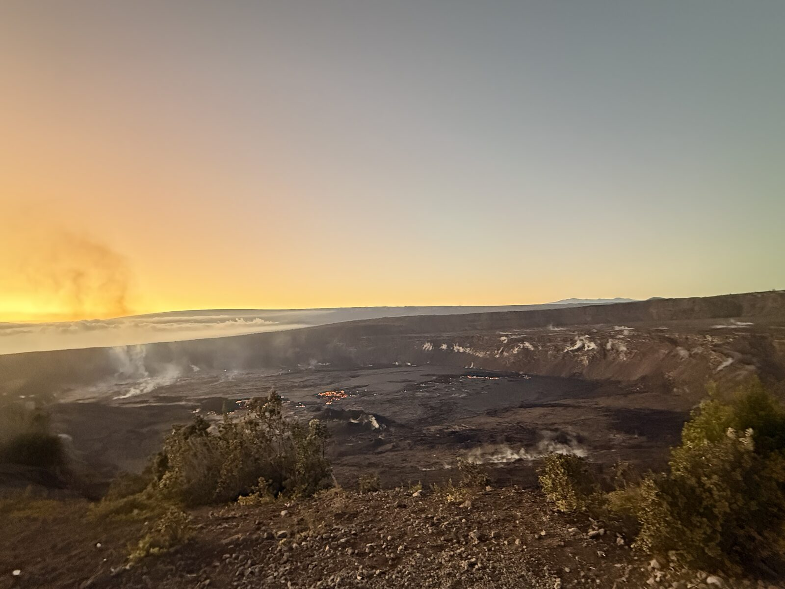
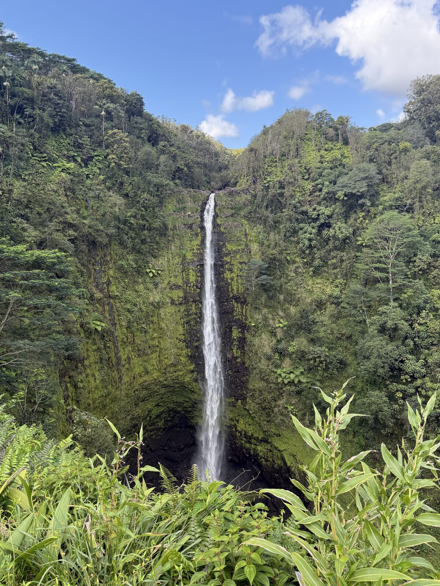
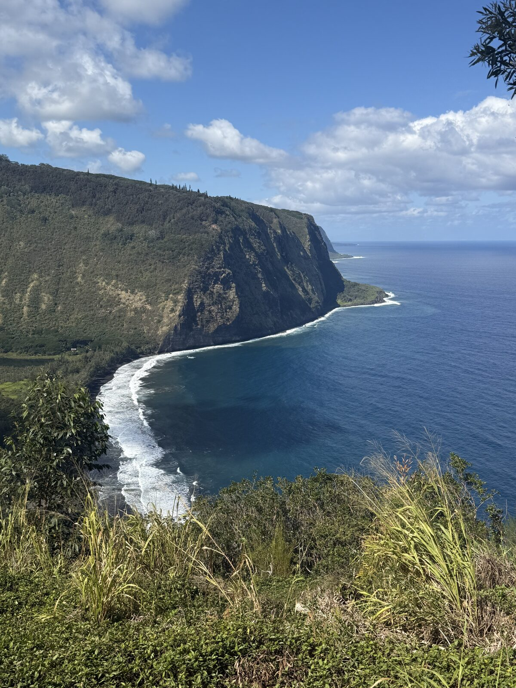

🌺 Hawaii: Big Island & Maui
An eight-day island-hopping trip splitting time between the Big Island and Maui — volcanoes, waterfalls, black- and green-sand beaches, snorkeling, and the Road to Hana.



Big Island: Volcanoes NP
Explore Hawaii Volcanoes National Park — Keanakako'i overlook, Thurston Lava Tube, Kilauea Iki, and Chain of Craters Road.
Waterfalls, surf & stargazing
Waipi'o Valley lookout, Akaka Falls, an afternoon surf lesson in Kona, and sunset/stargazing on Mauna Kea.
Caves, beaches & manta rays
Kaumana Caves, Rainbow Falls, Punalu'u black-sand and Papakolea green-sand beaches, then a nighttime manta-ray snorkel off Kona.
Historic park & snorkeling
Pu'uhonua o Honaunau historic park and snorkeling at Two Step, then sunset at the beach.
Maui: Road to Hana
Morning flight to Maui. Drive the Road to Hana halfway — Ho'okipa Beach, swim at Twin Falls.
Haleakala & west coast
Haleakala sunrise (book ahead), Maui Ocean Center, the Nakalele Blowhole, and snorkeling at Black Rock Beach.
Molokini & beaches
Molokini Crater snorkel tour from Maalaea Harbor, then a relaxed sunset at Ulua Beach.
Departure
Morning at Baby Beach before an early afternoon flight home.
- Hawaii Volcanoes National Park — craters, lava tube, Chain of Craters Road
- Mauna Kea — visitor center for sunset and stargazing
- Akaka Falls, Rainbow Falls & Kaumana Caves (Big Island)
- Punalu'u black-sand & Papakolea green-sand beaches
- Nighttime manta-ray snorkel off Kona
- Pu'uhonua o Honaunau & Two Step snorkeling
- Haleakala National Park sunrise (Maui)
- Road to Hana — Ho'okipa Beach, Twin Falls
- Nakalele Blowhole & Black Rock Beach snorkeling (Maui)
- Molokini Crater snorkel tour from Maalaea Harbor
- Lava Lava Beach Club (Big Island) — beachfront dinner
- Herbivore (Kona) — dinner spot
- Mika (Maui) — dinner on the Road to Hana
- Big Island: Hilo (first nights)
- Big Island: Holualoa / Kona area
- Maui: Haiku-Pauwela area
- Book Haleakala sunrise reservations and the Molokini snorkel tour in advance.
- Expect rain and cooler temperatures in winter; pack a light layer.
- Allow a full day to fly and transfer between the Big Island and Maui.
- The Shaka Guide app has helpful self-guided Big Island routes.